全球最大的博物馆群之一，从埃及木乃伊到现代艺术纵贯五千年。核心是拉斐尔房间与西斯廷教堂--教皇的私人书房与礼拜堂，装着文艺复兴两巨头隔空对话的巅峰之作。全程步行约 7 公里，请穿最舒服的鞋。
看点路线
Il Percorso
- 1早场 08:00 直奔西斯廷（顺时针反向游），或按官方顺序走到底
- 2松果庭院 -> 八角庭院（拉奥孔在此）-> 缪斯馆 -> 地图长廊
- 3拉斐尔房间（签字厅：《雅典学院》）
- 4西斯廷教堂（天顶 +《最后的审判》）--全程唯一不许拍照的展厅
- 5出西斯廷直通圣彼得大教堂（出口右侧通道，免二次安检）
馆藏名作
Musei Vaticani
绘画与湿壁画Pittura e Affreschi · 12 件

《雅典学院》
柏拉图与亚里士多德并肩走向观众，古希腊群哲聚于一堂。画中彩蛋：柏拉图是达芬奇的脸、孤僻的赫拉克利特是米开朗基罗、右下角黑帽青年是拉斐尔自己。

《创世纪》天顶
500 多平方米天顶、300 多个人物。亚当斜倚的慵懒与上帝扑面的动势之间那 3 厘米空隙，是艺术史上最著名的“将触未触”。

《最后的审判》
祭坛整墙巨作。被剥皮的圣巴托罗缪手中人皮是米开朗基罗自画像；把骂他“有伤风化”的司仪长画成驴耳地狱判官，是画家对审查最漫长的报复。
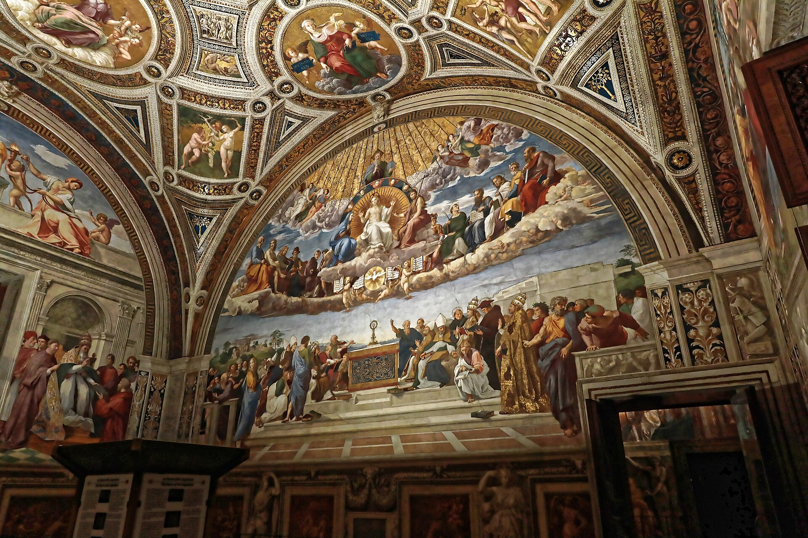
《圣礼之争》
签字厅另一整墙：天上的圣父圣灵与教会诸圣讨论圣餐，地上的神学家们隔着祭坛呼应。与《雅典学院》一墙之隔--启示与理性，文艺复兴的双翼。
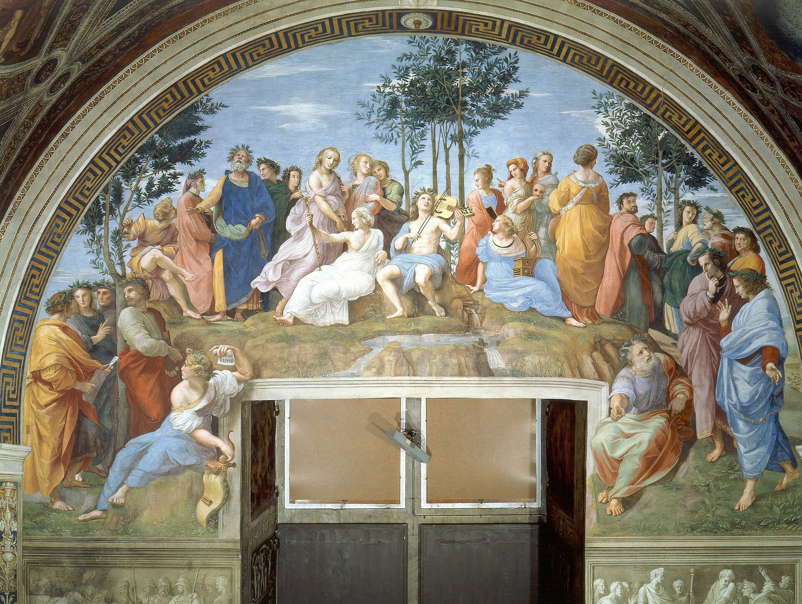
《帕那索斯山》
阿波罗与九位缪斯在诗之圣山奏乐，荷马、但丁、萨福分坐两侧。拉斐尔把“诗歌”这面墙画成了一场露天音乐会--墙上还有他的情人“福纳琳娜”的侧影。
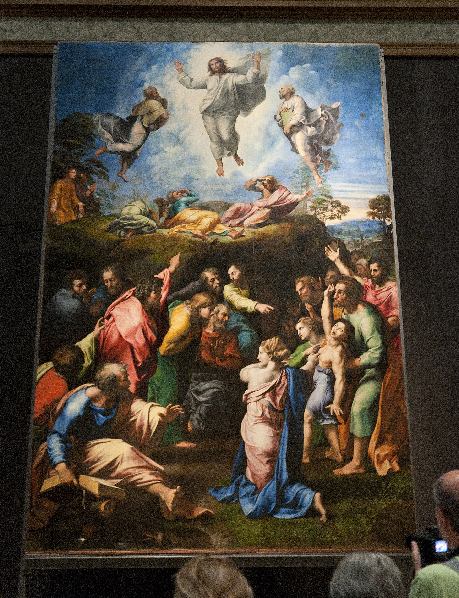
《变容》
拉斐尔绝笔：上半是基督显圣容的辉煌，下半是被附身少年的挣扎。他死后此画立在灵柩前送葬--瓦萨里说它“使其他一切画作黯然失色”。
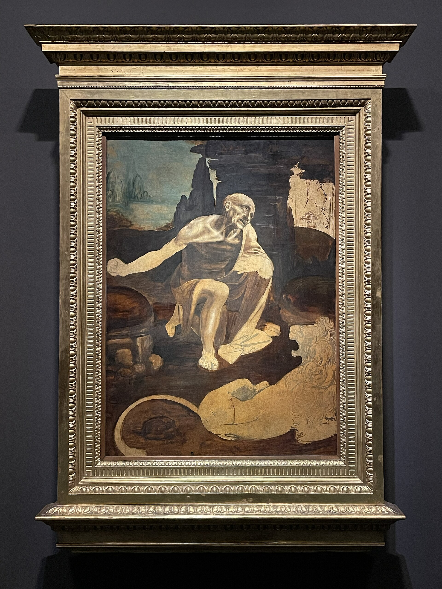
《荒野中的圣杰罗姆》
未完成的木板画：圣杰罗姆苦修的裸躯以解剖学精确度扭曲。达芬奇留在梵蒂冈的唯一画作--颜料层下还能看到他改过多次的底稿。
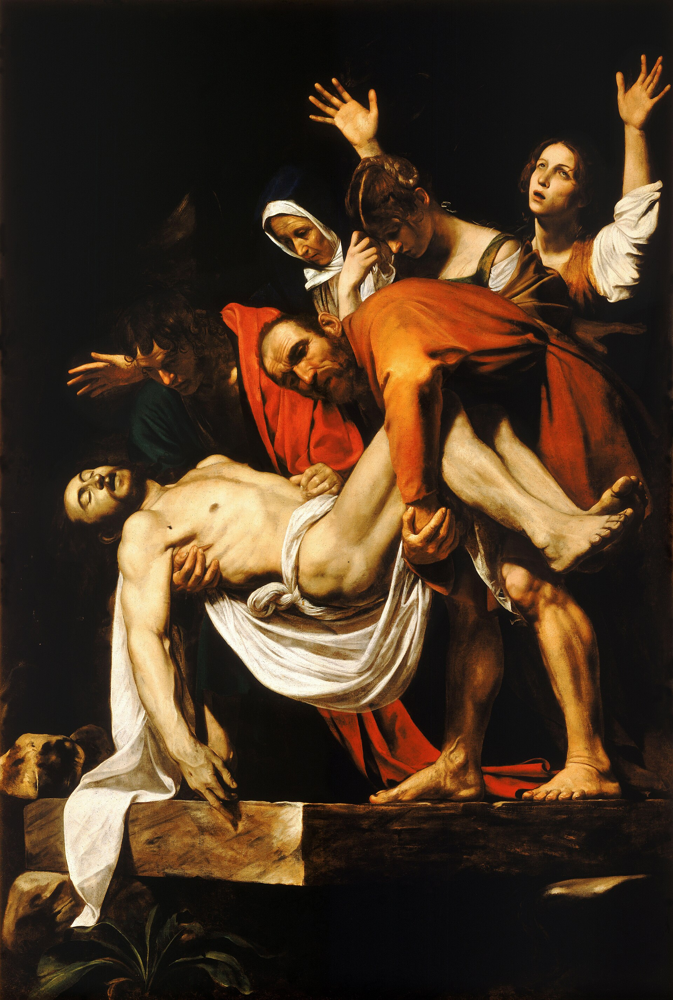
《基督下葬》
基督的尸体被抬入墓穴，一块凸出的墓石几乎戳到观者脸上。卡拉瓦乔的“剧场聚光”在此达到顶点--提香看到后说：这家伙在吓唬人，但他是认真的。
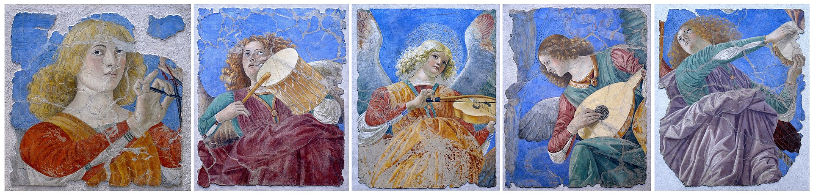
《奏乐天使》
从罗马圣使徒教堂穹顶揭下来的湿壁画残片：六位天使奏乐，俯冲的透视仿佛从天上探身而下。文艺复兴“飞天透视”最著名的孤本。
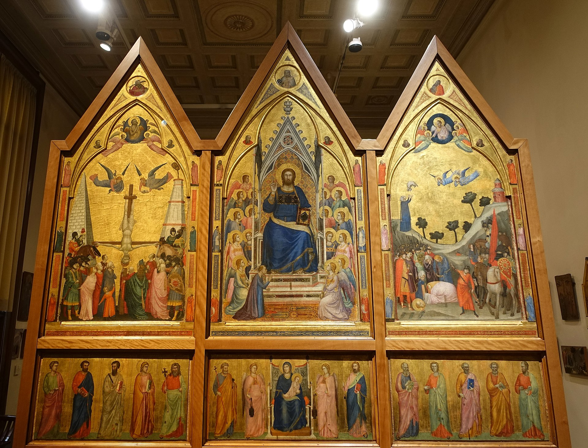
《斯特凡内斯基三联画》
为圣彼得旧殿祭坛所作的双面三联画，正面圣彼得、背面基督受难。乔托晚年作品--中世纪祭坛画与文艺复兴之间的桥梁。
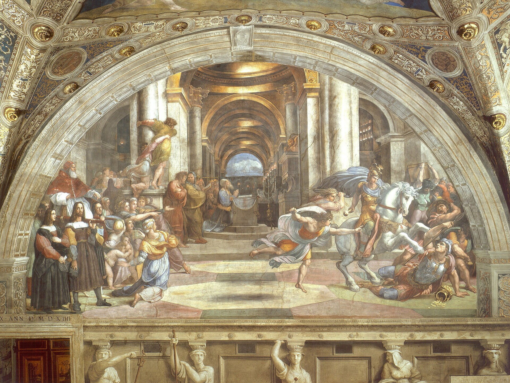
《驱逐埃利奥多罗》
埃利奥多罗率兵劫掠圣殿财宝，被天降骑士扑倒。教皇尤利乌斯二世借旧约故事警告：教会的财产，皇帝也动不得--壁画是他的政治檄文。
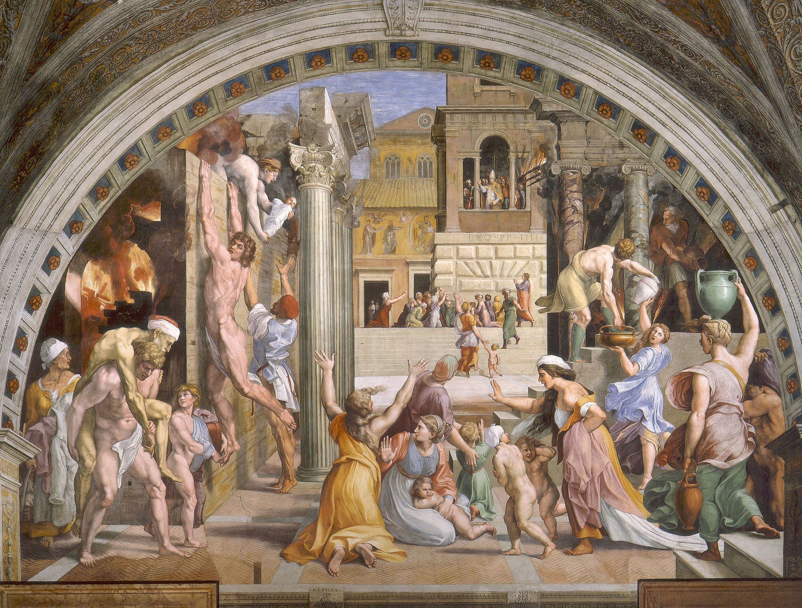
《博尔戈的火灾》
罗马博尔戈区大火，教皇利奥四世在廊柱上画十字止火。画面前景抱孩子的男子是拉斐尔对米开朗基罗斯拉夫式人体的致敬--两人此时已在互相“偷师”。
古典雕塑Scultura Antica · 10 件

《拉奥孔》群像
特洛伊祭司因警告“小心希腊人的礼物”而触怒雅典娜，与二子被海蛇绞杀。1506 年出土时米开朗基罗亲临现场--它直接改写了文艺复兴后期的人体美学。
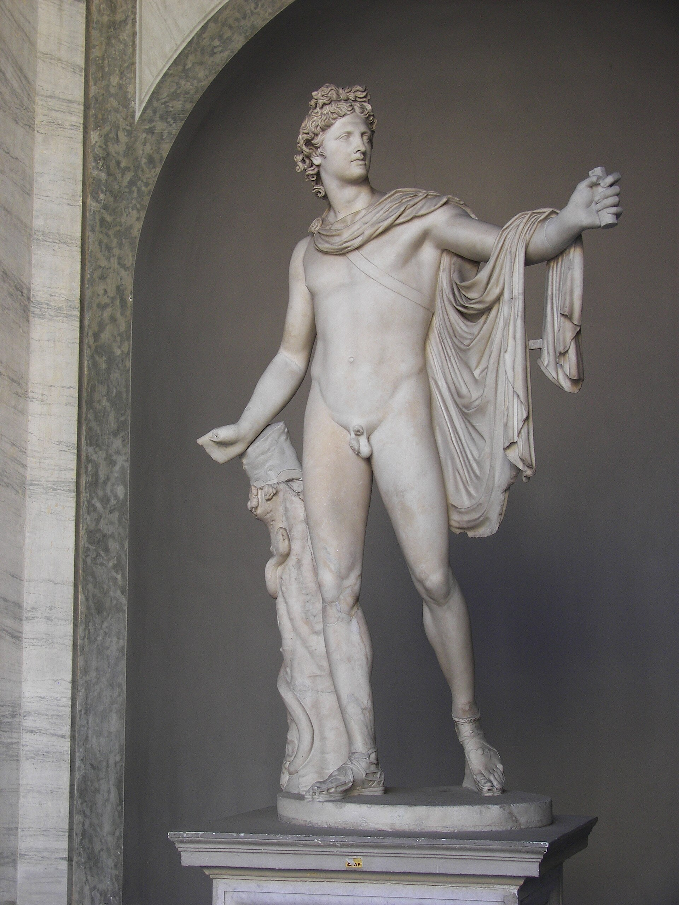
《观景楼的阿波罗》
刚射出箭矢的太阳神，重心轻悬。1750 年代它被立在观景楼庭院而得名，此后两百年是全欧洲“理想美”的标准像--温克尔曼的整个美学理论都为它而写。
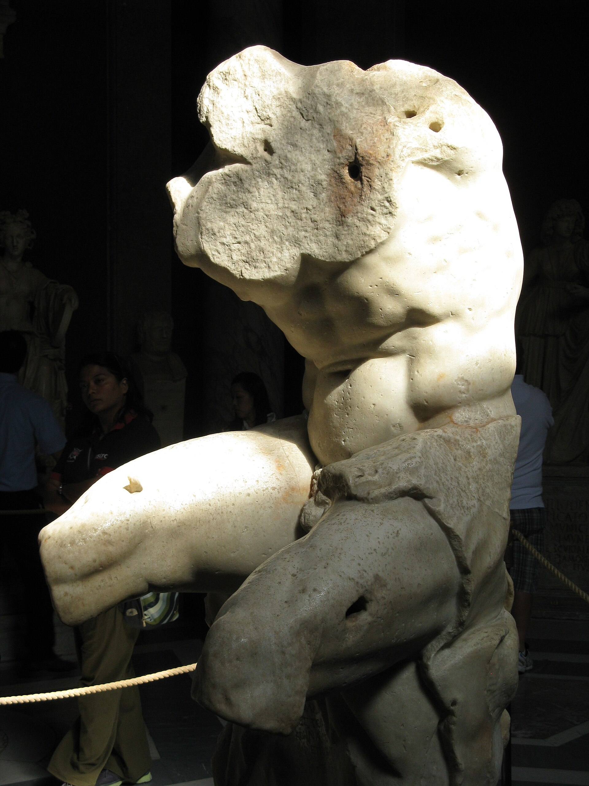
《观景楼躯干》
只剩躯干的赫拉克勒斯坐像。米开朗基罗拒绝修复它：“比完整更有教益。”西斯廷天顶里的先知与奴隶，肌肉全部师承这块残躯。

《第一门的奥古斯都》
出土于利维亚别墅的皇帝立像：甲胄上的浮雕讲述罗马与帕提亚的和解，胸甲中央是苍穹之神怀抱大地。帝国宣传艺术的总纲，教科书第一页。
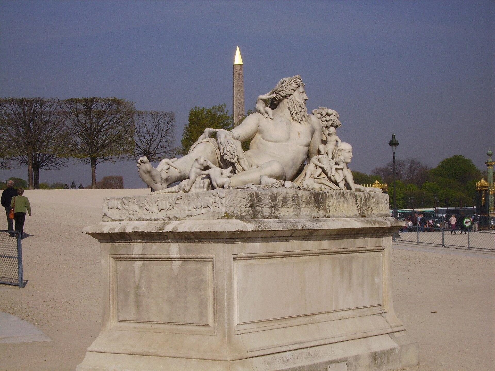
《尼罗河巨像》
象征尼罗河的卧像：十六个婴孩环绕（象征一年十六肘尺的洪水），狮身人面与飞鸟藏满全身。它是埃及崇拜在罗马的纪念碑--圣马可方尖碑同时代的“异域美学”。

《珀尔修斯》
新古典主义大师卡诺瓦的珀尔修斯提着美杜莎之首，立在八角庭院--正对观景楼阿波罗。古代经典与 19 世纪“仿古”同台竞技：谁更“希腊”？
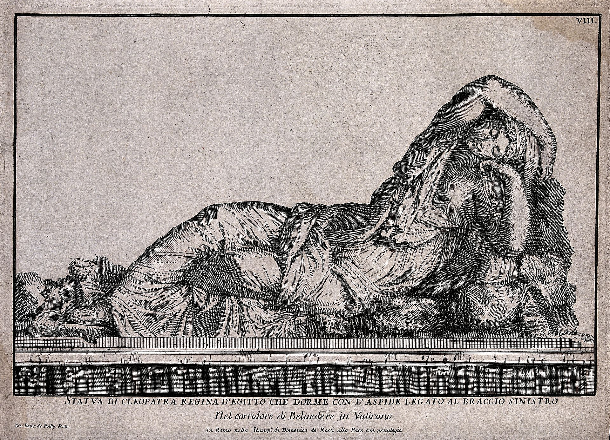
《克娄巴特拉/阿里阿德涅》
沉睡的“埃及艳后”实为阿里阿德涅，蛇形手镯是 18 世纪的错误脑补。它被安置在观景楼别墅时，游客都以为抚摸她会带来艳遇。
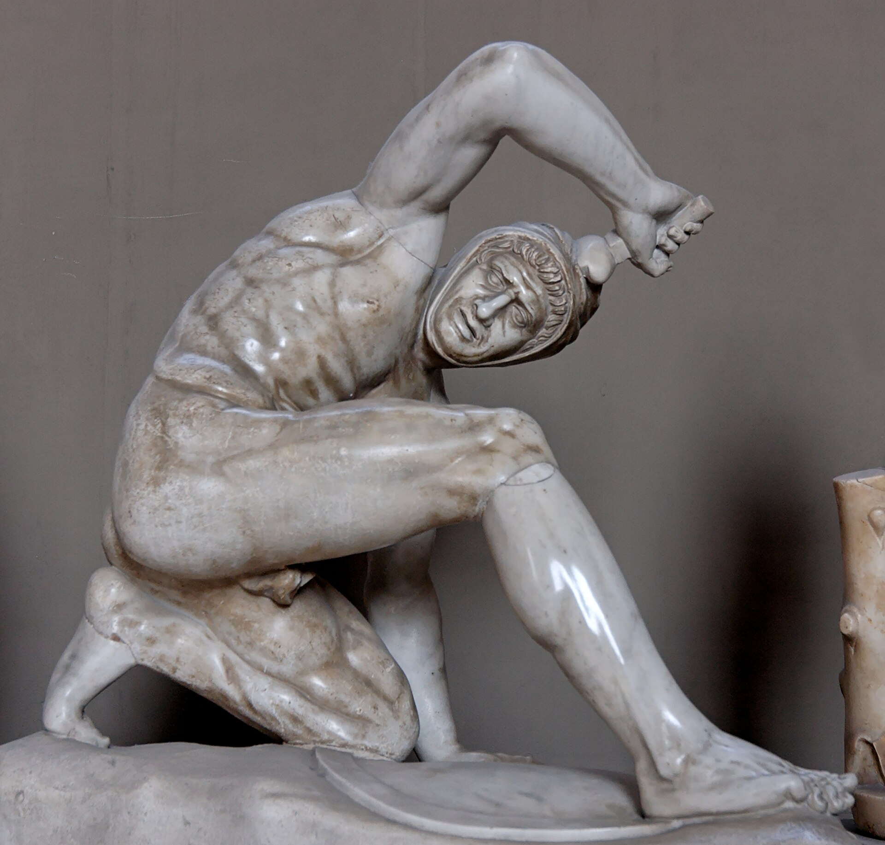
《波斯与达契亚战士》
八角庭院两尊跪姿蛮族战士：垂死的波斯人与被缚的达契亚人。帝国艺术的固定配方--用敌人的悲壮，反写罗马的胜利。
《赫拉克勒斯与忒勒福斯》
力士怀抱幼子忒勒福斯。雕像是古代“帕加马学派”的力量美学：肌肉的重量感直传米开朗基罗。
《沉思者卡皮托利诺》与希腊哲人群像
垂首沉思的哲人半身像--它给后世一切“思想者”形象提供了原型。庇护-克莱门蒂诺馆的古代雕塑长廊里，希腊悲剧家与哲人们排成一排，像一场两千年前的读书会。
历史故事
Le Storie
壹被逼出来的天顶画
1508 年，教皇尤利乌斯二世原本让米开朗基罗去雕自己的陵墓（报酬可观），后来改派他画西斯廷天顶。米开朗基罗自认是雕塑家，写信吐槽：“绘画不是我的行当。”--然后一画四年。
他几乎独自仰头作画（传说助手刚培训好就被他辞退），颜料滴进眼睛，颈椎受损，以致读信都要把信举过头顶。他在一首自嘲诗里写：胡子朝天，脖子折进肚子。
1512 年 11 月 1 日揭幕，罗马万人空巷。拉斐尔看完只留下一句：“感谢上天让我生在这个时代。”--对手的致敬，比历史学家的评语更有分量。
贰拉斐尔房间的密码
教皇尤利乌斯二世的私人书房（签字厅）四面墙，拉斐尔各画了一个知识门类：神学、哲学、诗学与法学。《雅典学院》占据“哲学”一墙--把异教哲人请进教皇的书房，本身就是文艺复兴的人文宣言。
画中彩蛋至今仍在被解密：前景孤僻坐者赫拉克利特（米开朗基罗的脸）是 1511 年后补的--那时拉斐尔刚看完未完工的西斯廷，被震撼到立刻在自家墙上给对手加了个“客串席位”。
找一找右下角那个直视观众的黑帽青年：那是拉斐尔自己。他在一群古代哲人中间，安静地签下了 26 岁的名字。
叁《最后的审判》与那头驴耳朵
1536 年，61 岁的米开朗基罗被教皇保罗三世召回，在完工 25 年的天顶对面画《最后的审判》。他把教皇的司仪长比亚焦·达·切塞纳画成了地狱判官弥诺斯--驴耳、蛇缠身，因为他批评壁画里裸体太多“有伤风化”。
司仪长向教皇抗议，保罗三世的回答成为艺术史上最著名的一句甩锅：“地狱不归我管。”
后来的教皇还是给裸体们画上了遮羞布（史称“穿裤子运动”），但那头驴耳朵留了下来--一个画家对审查制度最漫长的报复，至今仍在西斯廷墙上执行。
肆拉奥孔出土的那天
1506 年 1 月 14 日，罗马埃斯奎里山的一个葡萄园里挖出了一组缠绕的人体雕像。教皇尤利乌斯二世听到消息，立刻派朱利亚诺·达·桑迦洛与米开朗基罗去现场。
老普林尼记载过的《拉奥孔》--特洛伊祭司因警告“小心希腊人的礼物”而触怒雅典娜，与两个儿子被海蛇绞杀--重见天日。教皇当场买下，运进梵蒂冈。
它扭动的人体直接改写了文艺复兴后期的雕塑语言：米开朗基罗的奴隶、拉斐尔笔下的人物，都带着它的肌肉记忆。一块葡萄园里的泥土，给艺术史按了快进键。
伍地图长廊的“意大利全景”
120 米长的地图长廊挂着 40 幅巨幅地图，由数学家与地理学家伊尼亚齐奥·丹蒂主持绘制（1580-1585）：把 16 世纪的意大利从阿尔卑斯画到西西里，精确到能核对出海岸线变迁。
天花板是拱形幻觉画：站在中段抬头，你会以为屋顶是敞开的--透视法在这里被用来“拆掉”天花板。
教皇格里高利十三世的用意是统治工具：走完这条廊，等于巡视一遍教皇国与整个半岛。它是 16 世纪的“作战沙盘 + 谷歌地图”。
陆埃及的木乃伊与“埃及馆”
松果庭院北侧的庇护-克莱门蒂诺馆里有完整的埃及馆：木乃伊、石棺、狮头女神与青金石圣甲虫--19 世纪埃及学的收藏热潮，教廷也没缺席。
最著名的一件是“梵蒂冈木乃伊”：完整的女子木乃伊与彩绘棺，X 光检查显示她去世时约 20 岁。
从埃及馆到拉斐尔房间，动线的隐喻是：文明的时间轴在此排队。你走过的每一步，都跨越几百年。
柒双螺旋坡道
博物馆出口的双螺旋坡道（1932 年由朱塞佩·莫莫设计）是必打卡：一条下行的螺旋与一条上行的螺旋交织，同轴不同道，走到底也不会相遇。
它的灵感来自古代的双螺旋坡道--传说布拉曼特为尤利乌斯二世设计的“ Bramante 螺旋梯”能并排走人走骡。
旺季时人流把它变成一条缓慢的漩涡。走的时候低头看大理石地面被磨出的凹痕：每年六百万人的鞋底，是这座坡道的刻度尺。
捌彩色石子画的“拉斐尔地毯”
西斯廷教堂下层墙面的挂毯，是拉斐尔设计的《使徒行传》系列--原件在馆内挂毯陈列室，画稿（拉斐尔卡通）由拉斐尔工坊完成，布鲁塞尔织造。
2020 年代初，挂毯曾短暂重回西斯廷原位展出--平时你看到的是复制品，真迹只在特殊年份“回家”。
看画稿里的人物动态：拉斐尔把米开朗基罗式的力量，翻译成了自己温柔的语法。两人在同一间教堂里合作过一次，隔着一层羊毛。
玖现代艺术的“教皇批准”
博物馆尾段有现代宗教艺术馆：马蒂斯、达利、夏加尔与培根的作品在此陈列--1973 年保罗六世设立，当时的宣言是“教会与艺术家的离婚必须结束”。
梵蒂冈收藏现代艺术的逻辑延续了两千年：从地下墓穴的鱼到夏加尔的出埃及记，教会一直是最大胆的甲方。
走完七公里长征，最后撞见 20 世纪--这座博物馆的时间轴没有终点，它仍在下单。
拾“秘密档案馆”其实不秘密
梵蒂冈宗座档案馆（Archivio）因丹·布朗的小说被想象成阴谋的巢穴--其实它的名字原意只是“教皇的私人档案”，2019 年已更名为“宗座档案馆”以正视听。
馆藏着 12 世纪的教皇诏书、审判圣殿骑士的记录、伽利略案件的卷宗与亨利八世离婚案的裁定--研究者按申请查阅，2012 年起还办过展览。
博物馆出口不远处就是档案馆的门。看不见的地方，往往才是历史真正的仓库。
参观贴士
Consigli Pratici
- 西斯廷教堂内禁止拍照，安保密度全馆最高，别试
- 早 8 点第一场直奔西斯廷 = 独享 10 分钟（逆向走法）；常规顺序则把西斯廷留到最后
- 出口双螺旋坡道与邮局（梵蒂冈邮戳）值得停留 10 分钟
- 语音导览 €8 性价比高，展线长容易迷失叙事
- 与圣彼得大教堂同日游：出口右转免安检通道直达教堂（周三上午因教皇接见可能关闭）
- 每月最后一个周日免费但不预约，队伍凌晨就开始排--免费是这个星球上最贵的东西
顺路同游
Da Non Perdere